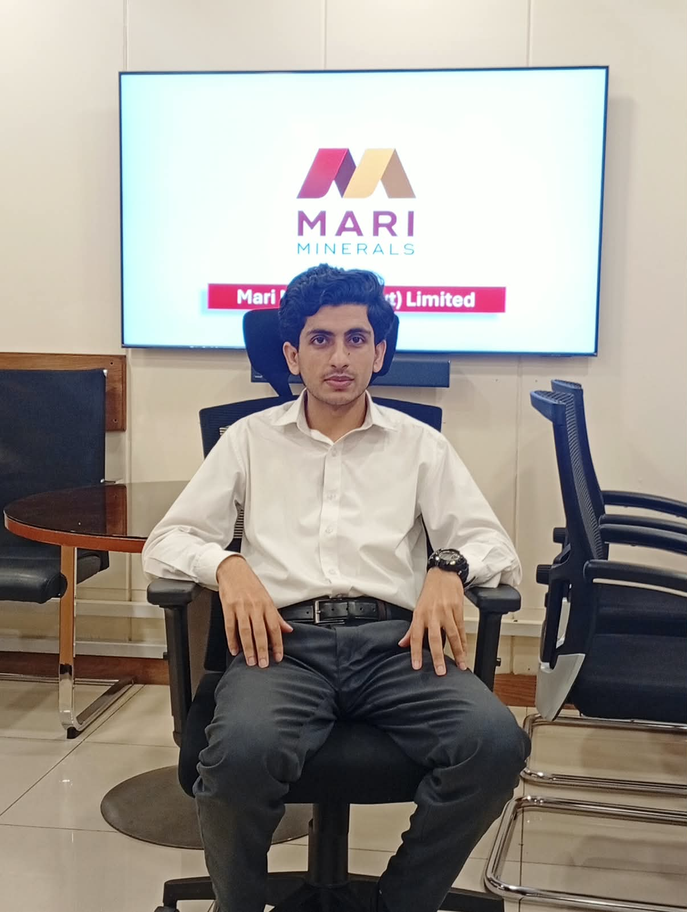

WELCOME TO MY WEBSITE
Exploring Remote Sensing, Geographic Information Systems, Artificial Intelligence and Geospatial Technologies.

GET TO KNOW ME
Hi, I'm Muhammad Aqib — a dedicated BS Remote Sensing & GIS student passionate about leveraging geospatial technologies and environmental applications to solve real-world spatial challenges.
Areas of Expertise & Practical Focus:
MY ACADEMIC JOURNEY
Current — 6th Semester
Academic Focus & Core Competencies:
Hands-on Experience & Practical Skills:
WHAT I CAN DO
MY ACADEMIC WORK
GIS-based flood vulnerability mapping using DEM, slope, land use/land cover, soil properties and spatial overlay techniques.
GIS HydrologyAnalysis of vegetation using satellite imagery and Normalized Difference Vegetation Index (NDVI) through Google Earth Engine.
Remote Sensing GEEComparison and Analysis of land Use and land Cover changes using satellite imagery and GIS techniques.
LULC Satellite DataSAR-based flood mapping using Sentinel-1 imagery for identifying changes in surface water extent.
Sentinel-1 SARRemote Sensing approach for monitoring glacier boundaries and changes using satellite imagery and DEM data.
Glaciers RSDevelopment of a conceptual Mini-SDI including Spatial Datasets, Metadata, Services, Users and Web GIS Components.
SDI Web GISWHAT I ENJOY
Exploring Satellite Imagery and Earth Observation.
Working with Spatial Data and Geographic Analysis.
Learning how AI can be applied to Geospatial Problems.
Learning programming and developing useful applications.
Learning new technologies and improving technical skills.
Interested in Oil & Gas and Minerals Sector.
MY VISION
My goal is to develop strong expertise in Remote Sensing, GIS, Spatial Data Handling and modern Geospatial Technologies. I want to apply these skills to Real-World Environmental and Spatial problems.
In the future, I aim to work in Oil & Gas Industry, Minerals, Spatial Data Analysis, Geospatial Research and other applications where GIS and Remote Sensing can support better decision-making.
GET IN TOUCH
Whether you have a geospatial project in mind, need expertise in GIS and Remote Sensing, or want to discuss potential academic research and collaborations, I am always open to new opportunities and discussions. Feel free to reach out to me for spatial analysis and mapping projects, satellite imagery and remote sensing solutions, academic research or industry collaborations, as well as GIS workflows and Python automation.
📍 Location: Islamabad, Pakistan
✉️ Email: maqib.jarral@gmail.com
🔗 LinkedIn: linkedin.com/in/muhammad-aqib
💻 GitHub: github.com/maqibjarral-dotcom